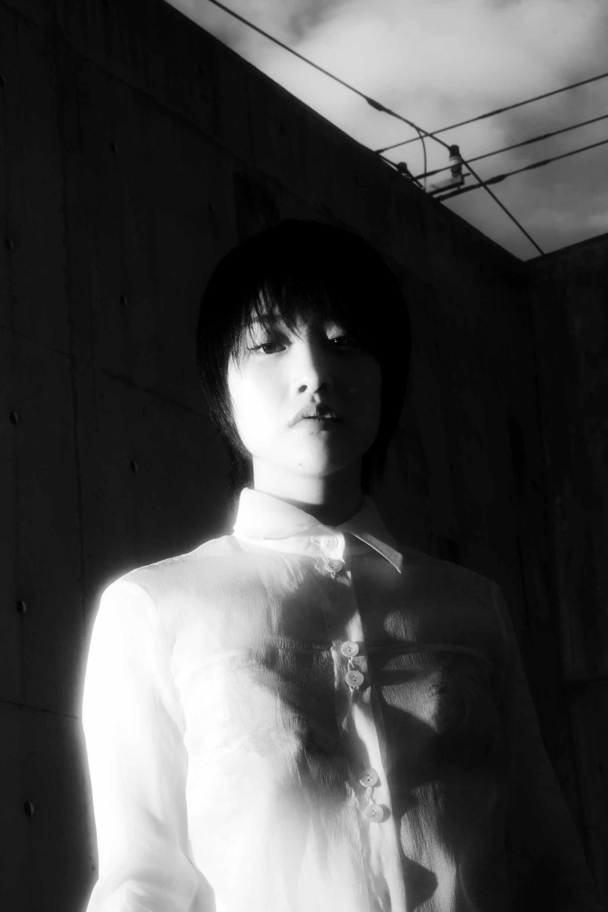
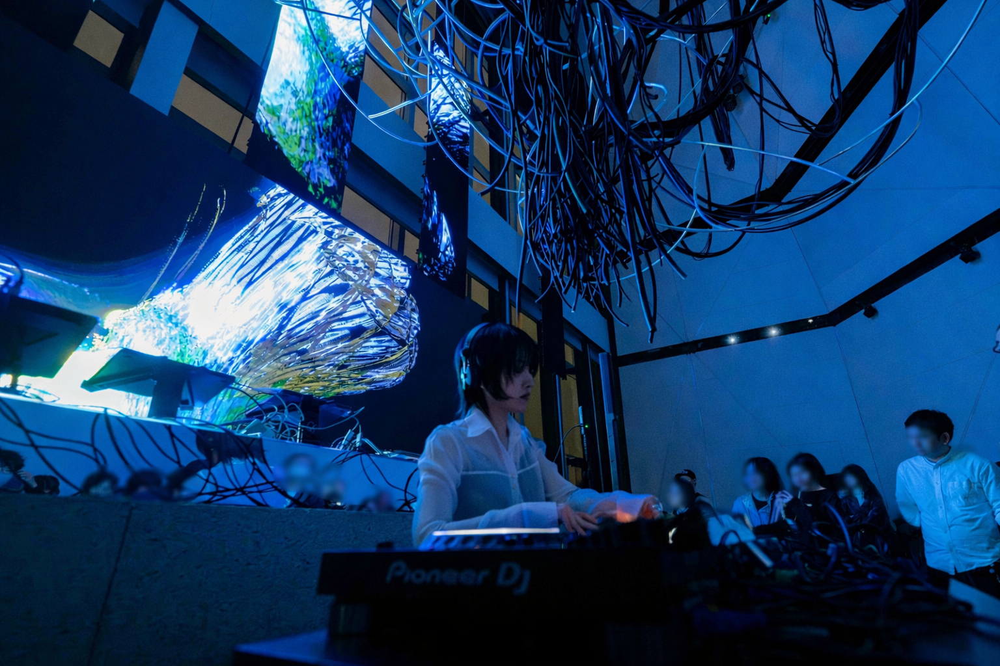
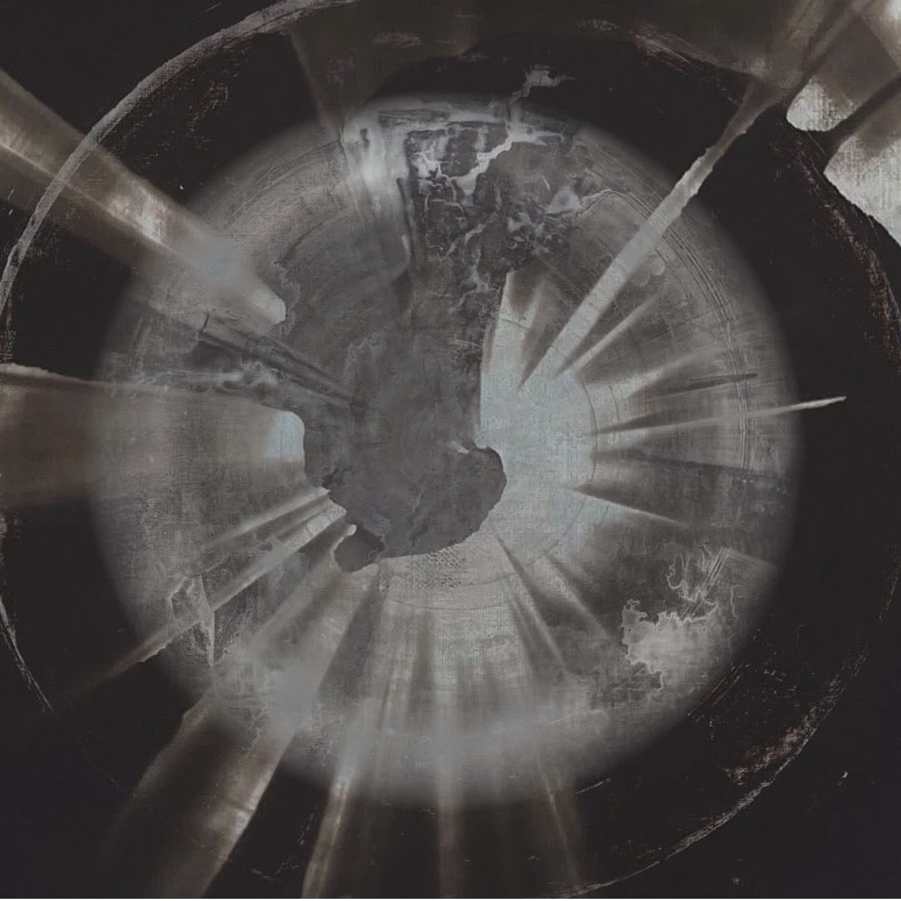
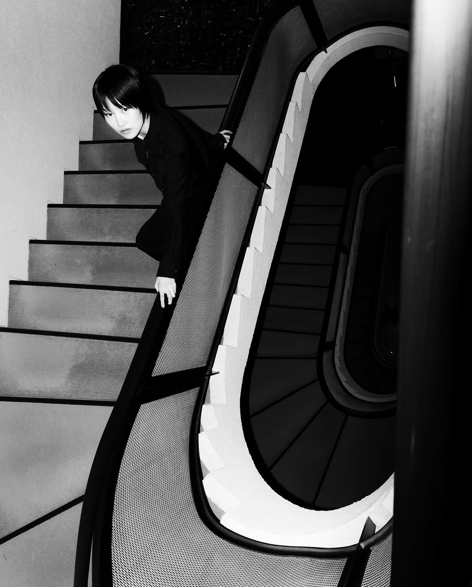

DJ · ARTIST
LISA MIZUNO is a DJ and artist with a profound history of soul-searching. She perceives music and dance not merely as entertainment, but as spiritual forces that connect communities and transcend the individual — a form of collective prayer. This philosophy lies at the core of her artistic expression, creating immersive experiences that speak directly to the deepest layers of human consciousness and emotion.
As the organizer of the Resonance event series, she skillfully integrates the essential elements of traditional Japanese culture — ma (space), wa (harmony), and inori (prayer) — into contemporary experiences. Her vision extends beyond music itself, influencing spatial design and physical expression, resulting in holistic and modern rituals.
In her DJ performances, LISA MIZUNO's sound is a multifaceted and experimental journey. Her sets unfold as dynamic, fluid soundscapes that guide listeners through a spectrum of emotions and states of being. Through this innovative and deeply personal approach, she has established a distinctive and vital presence within the electronic music landscape — offering not just performances, but truly transformative experiences.
LISA MIZUNOは深い自己探求を続けてきたDJでありアーティストです。彼女は音楽とダンスを、単なる娯楽ではなく、コミュニティを結び個人を超越する精神的な力——集合的な祈りの一形態と捉えています。この哲学が彼女の芸術表現の核心であり、人間の意識と感情の最深部に直接響く没入型の体験を創り出しています。
彼女はイベントシリーズ「Resonance レゾナンス」のオーガナイザーとして、日本の伝統文化の根底をなす要素——「間」「和」「祈り」——を現代的な体験へと見事に融合させています。これは音楽そのものを超え、空間デザインや身体表現にも影響を与え、真にホリスティックで現代的な儀式を創り上げています。
DJプレイにおいて、LISA MIZUNOのサウンドは多面的で実験的な旅です。彼女のセットは直線的ではなく、聴く者を多様な感情や存在状態へと導く、動的で流動的なサウンドスケープです。この革新的で極めて個人的なアプローチを通じて、彼女は電子音楽の風景の中に独自かつ重要な存在を確立し、単なるパフォーマンスではなく、変容をもたらす体験を提供しています。
共鳴
宇宙のメロディーに共鳴する魂の歌。
言葉や音、思考の波が互いに踊り、調和の中で響き合う。
心が響き、感情が共振し、意味が深まる瞬間。
私たちは共鳴の中で結びつき、存在の響きを感じる。
あなたと私の過去と未来の交差点
共鳴し合い
今、そこに
全ての感覚を委ねる。
Resonance
A song of the soul that resonates with the melody of the universe.
Waves of words, sounds, and thoughts dance with each other and resonate in harmony.
Moments that touch your heart, resonate with your emotions, and deepen your meaning.
We connect in resonance and feel the echoes of existence.


